MAPAS
LA FINCA MACMILLAN
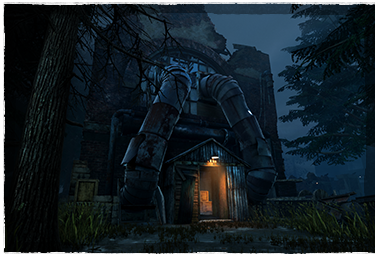
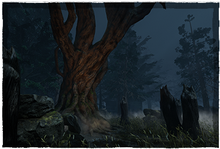
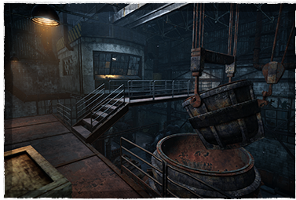
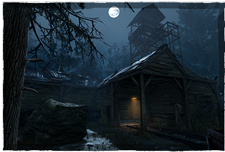
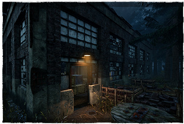
La fundición y la mina fueron el corazón y el centro de la finca. Los que tuvieron la mala fortuna de ser
empleados por
Evan MacMillan después de asumir el trabajo que su padre comenzó a escurrirse lentamente de todo tipo de
vida
normal. Las esposas piden que sus maridos vuelvan a casa. Las horas de trabajo se hicieron más largas, a
veces yendo de día a día y el pago disminuía. La mano de hierro de Evan y las estrictas reglas se hicieron
más duras cuanto más tiempo estuvo en control. Una tarde, se prohibió la salida de una gran fuerza
minera y se le ordenó reunirse dentro de uno de los pozos mineros más profundos e inestables. Las objeciones
fueron recompensadas con una visita al horno. Preguntas y rumores surgieron en la ciudad. Pero no había
respuestas. Un trabajador menos, perdido, una pobre viuda tal vez no era suficiente para acciones reales.
DESGUACE AUTOHAVEN
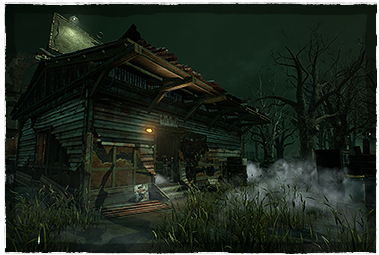
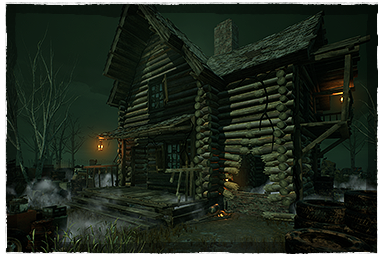
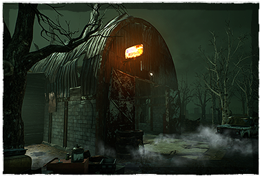
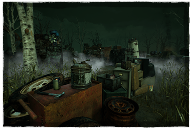
Para ojos comunes, Desguace Autohaven no era nada más que un montón de chatarra con autos viejos. Tal vez,
para algunos, una monstruosidad que las personas pasaban de camino a su trabajo. Pero nadie realmente
conocía el secreto
que estaba escondido allí. Nadie pensaba que la policía encontraría cientos de cuerpos. Pedazos y trozos.
Algunos más
podridos que otros. Atiborrados entre autos. Huesos humanos doblados de maneras innaturales. El hedor que
golpeó a la
policía fue insoportable, su hallazgo más horrible fue el propietario. Atrapado en la trituradora, sin
cabeza. Los pocos
empleados que fueron encontrados no contestaron las preguntas sobre los actos que sucedieron en el desguace.
GRANJA COLDWIND
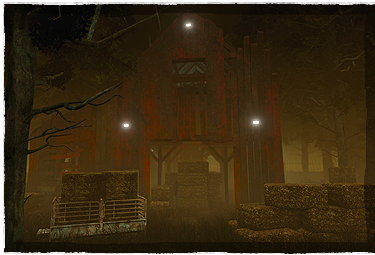
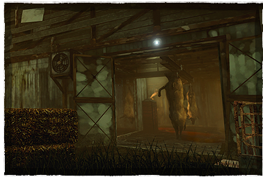
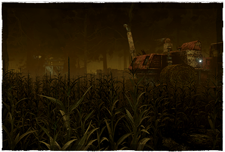
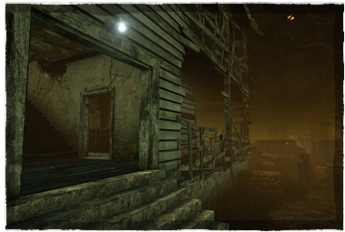
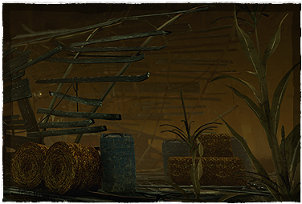
Un día en 1946, los productos dejaron de llegar. Y cuando las cosechas comenzaron a marchitarse y morir, los
investigadores deciden mirar más de cerca. La granja fue abandonada. El polvo cubría el suelo. El moho y la
humedad cubrieron el resto. Se encontró materia fecal en toda la casa. Todo menos en una habitación. Una
habitación parecía haberse salvado de lo que sufría el resto de la casa. No tenía otra explicación más
que alguien debía vivir allí. Pero no se encontró ningún alma viviente. En su lugar se descubrieron restos
en el sótano. Ambos de Sr. y Sra. Adams junto con el ganado.
ASILO CROTUS PRENN
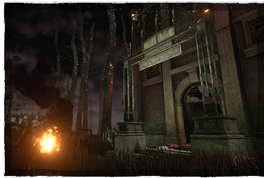
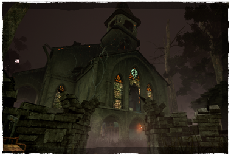
Establecido en 1857, Crotus Prenn fue originalmente un hospital, pero a medida que la necesidad de
almacenamiento creció, se convirtió en un manicomio. Crotus Prenn es un lugar lleno de historias que ni
siquiera se asemejan a la realidad que tiene lugar dentro de sus muros. Nunca fue el asilo más grande, sino
el que tenía
las mentes más violentas y retorcidas que el país había conocido. Pero no fueron los residentes los que
grabaron el nombre de Crotus Prenn en los libros de historia. En cambio, fue el
homicidio masivo donde más de cincuenta pacientes fueron encontrados muertos en sus camas.